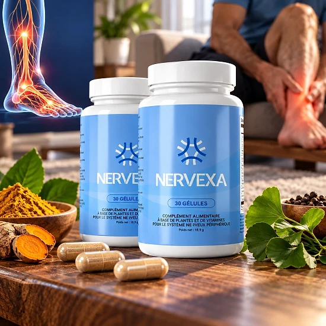

Qu’est-ce que Nervexa et comment agit-il ?
En quelques mots, Nervexa est un complément en gélules destiné à accompagner le confort nerveux et la vitalité de chaque jour. Selon les informations publiées par la marque, ses composants, étudiés scientifiquement, peuvent soutenir la protection cellulaire et l’énergie au fil de la journée.
Le public visé est celui des adultes qui connaissent des picotements passagers ou une sensation d’engourdissement aux extrémités. Il est présenté comme un accompagnement du bien-être de tous les jours, sans garantie de résultat rapide.
On compte dix actifs dans chaque gélule, notamment de la berbérine, du ginseng coréen, du zinc, du chrome et de l’acide alpha-lipoïque.
Sur le plan du mécanisme, deux minéraux jouent un rôle clé : le zinc, qui protège les cellules du stress oxydatif, et le chrome, qui soutient le métabolisme des macronutriments. Le reste de la formule associe un antioxydant réputé, l’acide alpha-lipoïque, et des plantes comme le ginseng coréen, liées traditionnellement à l’énergie.
Le mode d’emploi prévoit une gélule quotidienne avec de la nourriture, et le flacon de 30 gélules dure un mois. Une prise régulière sur trois à six mois est recommandée par la marque.
Le flacon mentionne une fabrication américaine et un distributeur européen, Digistore24 MSLW Limited, installé à Dublin. Il est aussi question, sur le site, d’un établissement certifié GMP et d’ingrédients non OGM. Chaque flacon renferme trente gélules végétales, pour un poids net de 18,43 g. Toutes les mentions légales figurent sur une étiquette en français, claire et complète.
Rappelons que Nervexa est un simple complément et qu’il n’a pas vocation à diagnostiquer, traiter, guérir ou prévenir une maladie. Il ne prend pas la place d’un suivi médical, et les effets peuvent être différents selon les personnes.
Nervexa – Ingrédients
Voici, d’après l’étiquette et le site officiel, ce que contient une gélule de Nervexa :
Acide alpha-lipoïque (75 mg) : composé antioxydant réputé, présent dans beaucoup de compléments de bien-être.
Zinc (gluconate, 5,5 mg) : contribue à la protection cellulaire et à un métabolisme normal.
Chrome (picolinate, 50 µg) : contribue au métabolisme normal des macronutriments.
Extrait de thé vert (75 mg) : riche en catéchines et en EGCG.
Extrait de chardon-Marie (50 mg) : plante traditionnelle riche en silymarine.
Cinq autres actifs végétaux : berbérine HCl, resvératrol, piment de Cayenne, ginseng coréen et feuille de lilas des Indes.
Pour les minéraux, la formule utilise du gluconate de zinc et du picolinate de chrome, tandis que le ginseng contient 8 % de ginsénosides. L’étiquette indique aussi un resvératrol issu de renouée du Japon et un lilas des Indes à 2 % d’acide corosolique. Les doses sont indiquées par gélule, ce qui rend la lecture simple et transparente.
Pour le reste, la gélule est d’origine végétale et contient de la cellulose et des anti-agglomérants.
Nervexa – Effets secondaires
Nervexa est présenté par le fabricant comme bien toléré dans la plupart des cas, grâce à des ingrédients d’origine naturelle. Certaines précautions figurent néanmoins sur le flacon et sur le site, et méritent d’être lues avant de commencer. Le site officiel indique que ses déclarations n’ont pas été évaluées par une autorité de santé.
L’EGCG du thé vert fait l’objet d’un avertissement : pas plus de 800 mg par jour, et jamais à jeun. L’étiquette recommande d’éviter tout autre produit au thé vert le même jour. Il s’agit de consignes classiques pour un extrait de thé vert, à respecter sans exception.
Les femmes enceintes ou qui allaitent et les mineurs ne doivent pas l’utiliser. Si vous prenez des médicaments, si vous êtes diabétique ou sous surveillance médicale, un avis médical est nécessaire avant de commencer.
Les questions fréquentes suggèrent un intervalle d’au moins deux heures avec les autres médicaments. Au moindre effet inhabituel, cessez la prise et demandez conseil à un médecin ; les réactions diffèrent d’une personne à l’autre. Lors d’un rendez-vous médical, apporter le flacon permet au professionnel de vérifier la composition exacte. L’association de plusieurs plantes et minéraux justifie de demander conseil à un professionnel.
Nervexa – Posologie
L’étiquette prévoit une seule gélule par jour au cours d’un repas, avec un grand verre d’eau selon la FAQ.
Chaque flacon renferme 30 gélules, de quoi tenir un mois sans aucune préparation. Le geste est rapide et trouve facilement sa place dans une journée bien remplie. La gélule se prend telle quelle, avec un verre d’eau, sans être ouverte.
La régularité est présentée comme essentielle, avec de premiers effets rapportés au bout de deux à trois semaines. Pour un soutien optimal, le site parle d’au moins 90 jours, et même de trois à six mois. Il peut être utile de noter le jour où vous commencez, un flacon correspondant à un mois. Un oubli ne se rattrape pas en doublant la dose ; il suffit de reprendre une gélule par jour.
Une alimentation équilibrée et une activité régulière sont recommandées en complément de la prise. L’étiquette souligne qu’aucun complément ne remplace un mode de vie sain.
Pas plus d’une gélule par jour : le flacon se conserve au frais, au sec et sous 30 °C. Le produit doit rester hors de portée des enfants ; un sceau abîmé est un signal pour ne pas l’utiliser.
Nervexa – Remboursement
Chaque commande de Nervexa bénéficie d’une garantie de remboursement de 60 jours. Vous pouvez donc récupérer la totalité du montant de l’achat si le produit ne vous satisfait pas, sous certaines conditions. Attention, le délai part de la date d’achat et pas de la réception du colis.
Dans quel délai ? 60 jours après l’achat ; la marque exige le renvoi de tous les flacons, même vides.
Pour commencer : contactez support@centralmeister.com en précisant la commande et le motif ; l’envoi du colis peut se faire sans attendre. La politique de retour demande également le nom, l’adresse et les coordonnées du client.
Ensuite : le colis part vers Nervexa Returns à Moordrecht, aux Pays-Bas, avec un numéro de suivi à garder. Un retour non suivi n’est pas traité par la marque. La confirmation de commande est utile, puisqu’elle prouve la date d’achat. Ces justificatifs accélèrent le traitement de la demande par le service client. Le service client répond aux questions sur la procédure par e-mail.
Enfin : le service client examine le retour et vous informe par e-mail de sa décision. Le montant est recrédité sur la carte ou le moyen de paiement utilisé, sous 5 à 10 jours ouvrables.
Toutes les conditions figurent sur le site officiel, à lire attentivement avant d’acheter.
Nervexa – Où l’acheter ?
Le site officiel get-nervexa.com est le point de vente de Nervexa, avec un paiement géré par Digistore24. La marque ne mentionne aucun revendeur sur Amazon, eBay ou ailleurs. Avant d’acheter, il est possible de consulter l’étiquette complète sur le site officiel.
Un flacon acheté ailleurs peut sembler authentique, mais sa provenance et sa conservation ne sont pas contrôlables. La qualité et la sécurité du produit ne sont alors plus assurées, ni la garantie de 60 jours.
Commander sur le site officiel reste le choix le plus courant, car il garantit un produit authentique et l’accès au support. Le paiement est présenté comme unique sur la page de commande. Une question sur votre commande ? Le support répond à support@centralmeister.com. Le produit reçu correspond alors à l’étiquette affichée sur le site officiel. Le service client de la marque n’est pleinement accessible qu’aux commandes officielles.
Un dernier réflexe : contrôler que l’adresse est bien celle du site officiel de Nervexa avant de payer.
Pour être sûr d’obtenir le produit authentique, la plupart des utilisateurs choisissent de passer par le site officiel.
Nervexa est-il une arnaque ?
Rien, dans le site officiel ni sur l’étiquette, ne laisse penser que Nervexa soit une arnaque. Ce complément existe bel et bien, se vend via Digistore24, une plateforme connue, et vise le confort des nerfs.
La transparence est réelle : la dose de chaque actif figure sur le tableau nutritionnel. Les rôles attribués au zinc et au chrome sont des fonctions admises pour ces nutriments.
On trouve sur le flacon le nom du distributeur à Dublin et, sur le site, une adresse de retour néerlandaise. L’éditeur du site est identifié dans les mentions légales, avec une adresse au Brésil. Ces coordonnées ne disent rien des résultats, mais elles rassurent sur l’existence réelle des vendeurs.
Petit bémol : la page de commande utilise un compte à rebours et des messages de stock limité. Une FAQ parle d’absence d’effets secondaires, alors que l’étiquette mentionne plusieurs mises en garde ; c’est l’étiquette qui fait foi. Les effets varient selon les personnes, et rien ne remplace l’avis d’un médecin. Des attentes réalistes sont recommandées pour tout complément de ce genre.
Une garantie de remboursement de 60 jours s’applique, avec des étapes de retour expliquées sur le site.
Nervexa peut convenir aux adultes souhaitant soutenir le confort des nerfs, à condition de passer par le site officiel et de consulter un médecin sous traitement.
Pour vérifier les détails du produit ou sa disponibilité actuelle, le site officiel de Nervexa reste l’option la plus sûre.

Vérifier la disponibilité sur le site officiel